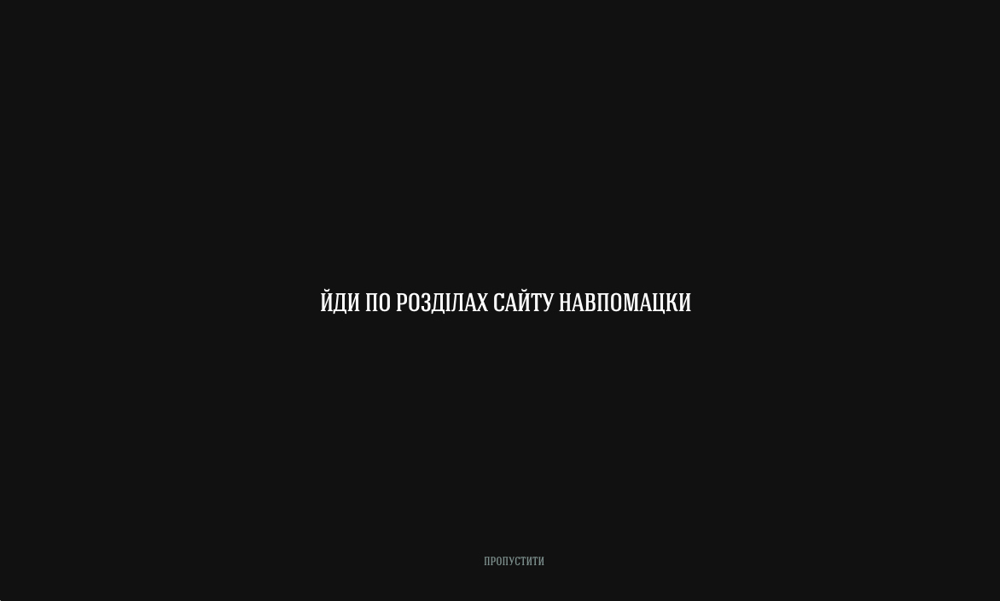
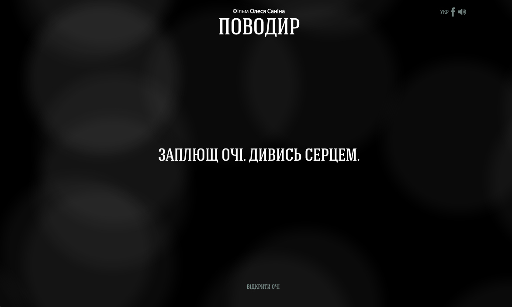
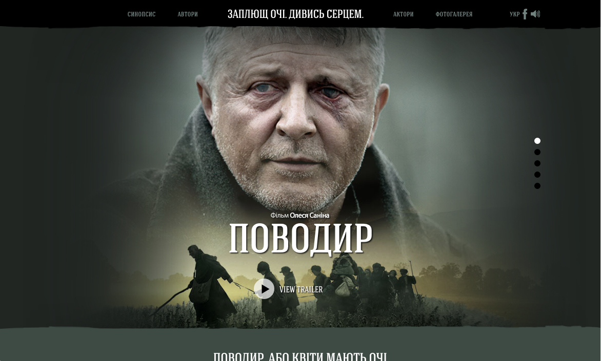
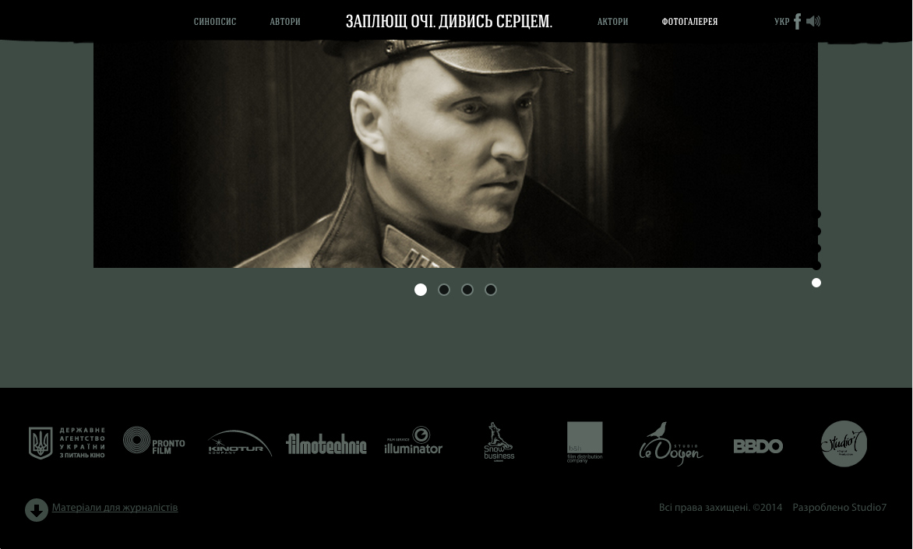
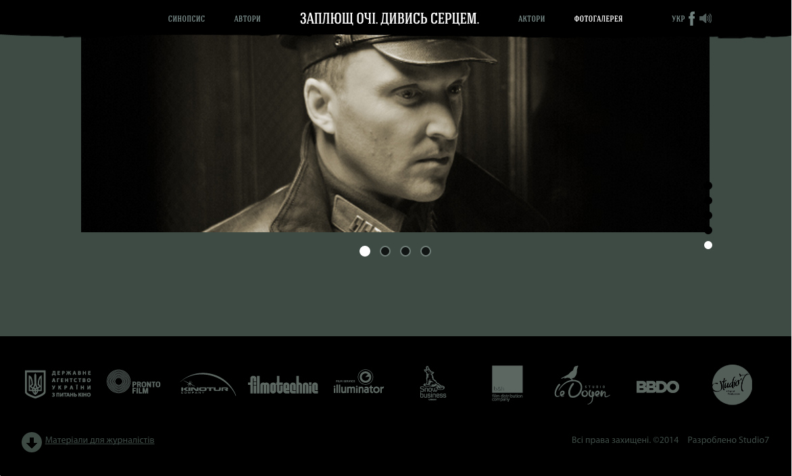
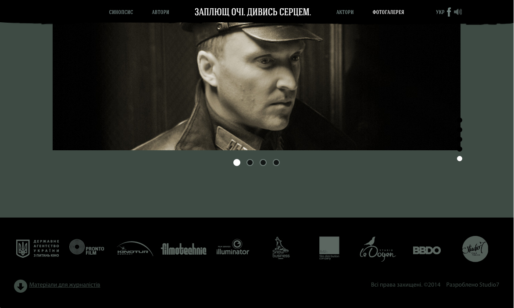

Przewodnik
Agencje BBDO Ukraine i Proximity Ukraine
http://povodyr.com/

 

Zadanie
Korzystając z wizji kreatywnej agencji stworzyć stronę internetową dla ukraińskiego kina ”Przewodnik“. Celem tej strony jest zachęcanie widzów do zwiedzania kina.
Realizacja
Kluczowym momentem w tej witrynie była lekkość i dostępność i dla tego strona oferuje dwa sposoby przeglądania: kreatywny i zwyczajny. Drugim wyzwaniem było stworzenie strony z minimum JavaScript i nie zawierający w ogóle nic po stronie serwera.